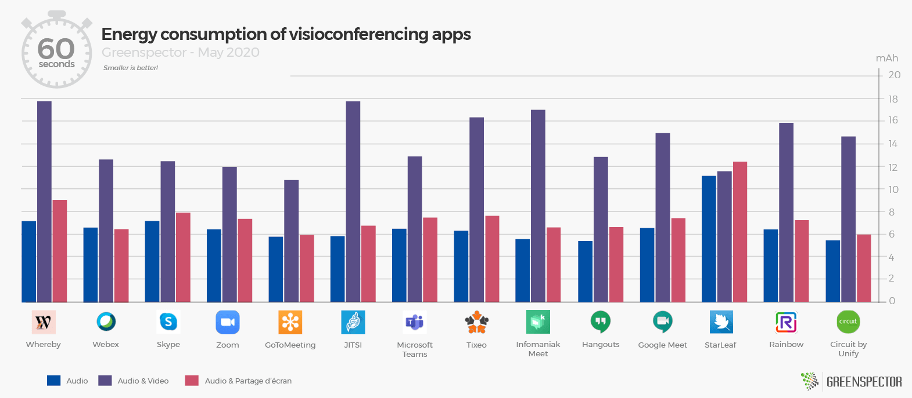
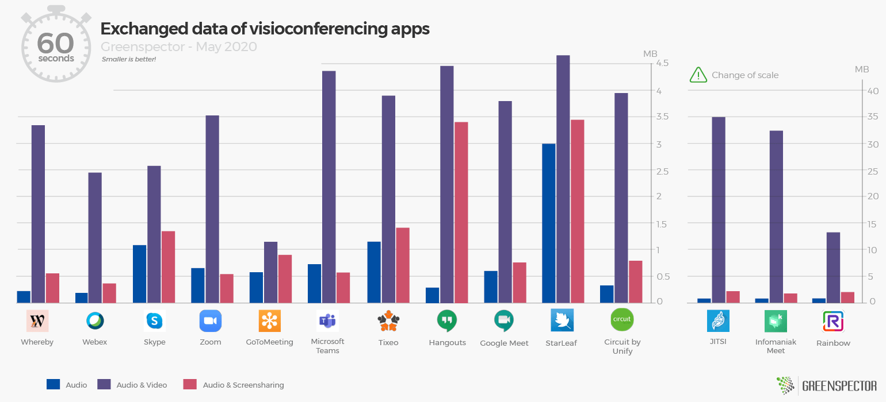
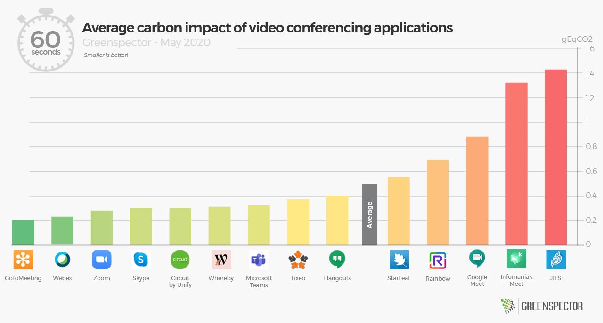
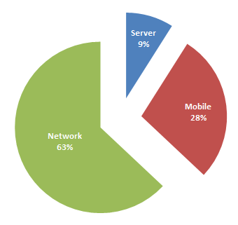
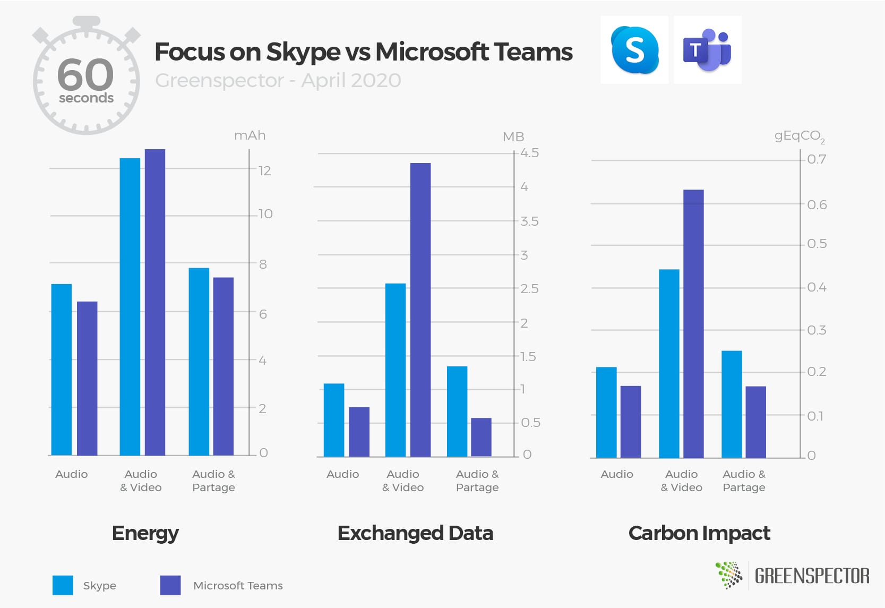
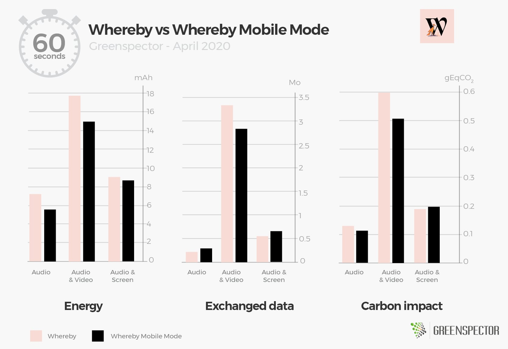
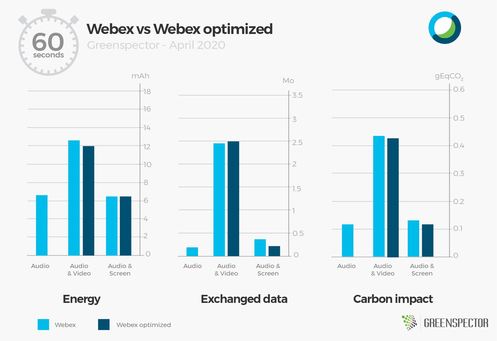
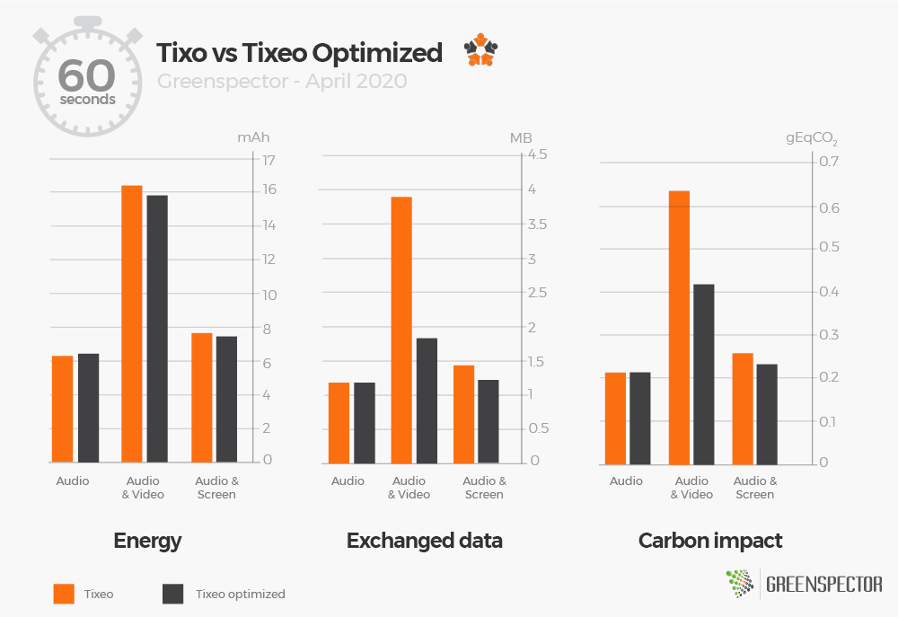

Article updated with new measures on StarLeaf, Rainbow and Circuit by Unify on May 19, 2020.
Article updated with new measures on Hangouts and Google Meet on May 4, 2020.
Article updated with new measures on Tixeo and Infomaniak Meet on April 23, 2020.
Article updated with new measures on JITSI and Teams on April 15, 2020.
The current « stay at home » context mechanically increases the use of online collaboration tools, in particular videoconferencing tools. This leads to a pressure on the network and more particularly to a significant load on the servers of each solution. It is therefore important from an efficiency point of view but also an environmental impact one to choose the simplest and most efficient solution.

For this study, we compare 14 videoconferencing applications: Whereby, Webex (by CISCO), Skype, Zoom, JITSI, Microsoft Teams, Tixeo, Infomaniak Meet, Hangouts, GoToMeeting, Google Meet, StarLeaf, Rainbow and Circuit by Unify.
For each of these applications, measured on an Samsung S7 smartphone (Android 8), the following three scenarios were carried out through our GREENSPECTOR Test Runner, allowing manual tests to be carried out over a period of 1 minute:
- Audio conference only in one-to-one
- One-to-one audio and video conference (camera activated on each side)
- One-to-one audio conference and screen sharing
Each measurement is the average of 3 homogeneous measurements (with a small standard deviation). The consumption measured on the given smartphone according to a Wi-Fi type network can be different on a laptop PC with a wired network for example.
Measurement of energy consumption (mAh)

The StarLeaf application consumes the most of all three scenarios. This is due to the fact that the consumption in audio only mode, audio + screen sharing or audio + video is the same. This is a special case of our study. The GoToMeeting application is the least energy-consuming, closely followed by Hangouts, Zoom and Webex.
The energy consumption of all these applications is on average 2.1 times higher when adding video to audio and only slightly higher when adding screen sharing to audio (+14%). It’s not a surprise, avoid sharing with a camera to consume less energy on your devices during your video conferences and save your autonomy and the lifespan of your battery!
Measurement of data exchanged (MB)

GoToMeeting and Webex are the two applications that consume the least data. JITSI and Infomaniak Meet are the ones that consumes the most. Overall and without any surprise we note that the audio scenario is the one that consumes the least data. While the scenario activating both audio + video stream is the most consuming one.
The data consumption of all of these applications is 13 times higher when adding video to audio and almost doubled when adding screen sharing to audio (+77%). It’s not a surprise, avoid sharing video and limit your screen sharing to consume less data on networks in your video conferences!
It should be noted that these significant differences are mainly due to the significant audio-video consumption of the JITSI application with 35 MB transferred in 1 minute compared to 1.13 MB for GoToMeeting! JITSI‘s optimized mode does not reduce this data impact (33.4 MB / minute). Infomaniak Meet based on the JITSI engine meets the same volume anomaly on average and mainly on the audio + video part without improvement with the optimized mode.
Projection of the measured carbon impact data (gEqCO2)
A conference on mobile is 3 times more impactful for the environment when we add video to audio.

The carbon impact projection of all of these applications is on average 3 times greater when adding video to audio and higher when adding screen sharing to audio (+35%). It’s no surprise, avoid sharing video and limit your screen sharing to less impact infrastructure (network, datacenter) and on your devices in the context of video conferences!

Without any surprise, a large part of the carbon impacts are located on the network part (63%) but the impacts part on the device (28%) should not be overlooked!
The JITSI and Infomaniak Meet apps even averages 5.8 times more impact when adding video to audio and 40% more when adding screen sharing.

In the Skype vs Teams battle at Microsoft, the overall results are very close (6%). The Carbon impact is lower for Skype with a lower data impact but higher energy consumption on the mobile than Teams.
Which applications optimize energy and data consumption?
Only Whereby and Webex could be tested on optimization features for the mobile version.
The Whereby application with its « Mobile mode » setting which limits the resolution of the stream as well as other resource consumption optimizations. And Webex thanks to its configuration allowing to deactivate High-definition playback of videos only. Whereby saves 21% on energy consumption on the audio side, 15% on the audio and video side and 3% on the screen sharing side. These gains are nevertheless low considering the results obtained by the application that consumes the most audio and video mode from our panel.

On the Webex side, the gains are barely visible as limited only to the video part. It’s barely 5% gain in the Audio and Video scenario for the energy and carbon impact. The exchanged data is even slightly higher in audio and video mode.

The optimized JITSI application does not improve the data or energy impact. Power consumption is even higher in screen sharing mode in this optimized mode. However, there is a reduction in the data loaded in this optimized but minor mode (11% on average). Same findings for Infomaniak Meet.

The optimization of the TIXEO parameters makes it possible to considerably reduce the impact in audio + video mode and allows it to be classified as the 2nd least impacting application in the panel.
As for the Zoom application, a notification of battery overconsumption appeared several times during the measurements. Although we can optimize the video quality on PC, it does not seem possible to configure this on mobile. Without this optimization, the application becomes the most energy-consuming application in audio + video mode.

GREENSPECTOR advices:
- Promote audio only during your conferences: the video stream will tend to consume much more especially when sharing video via camera.
- We recommend that publishers provide optimization options to the user and make them as accessible as possible even by default.
- Prefer videoconferences over travel by car!
- Comparison for 2 people who talk to each other for 3 hours in video + video (1 gEqCO2 on average per minute) when one of the two made 20 kms (112 g eqCO2 / km in France) round trip for a face-to-face face,
- In videoconference: 180 * 1 * 2 = 360 gEqCO2.
- By car: 112 * 20 = 2.4 kg EqCO2. Or 6.7 times more for the physical one-to-one.